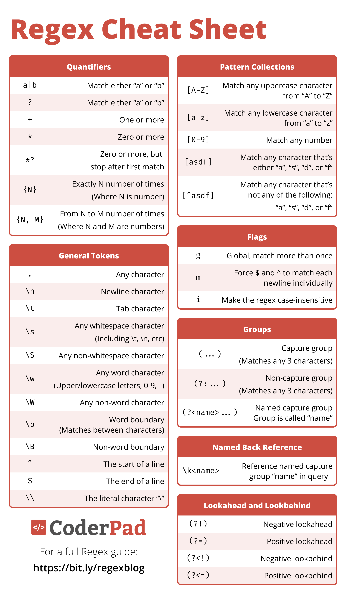

![]()
#install_packages(pacman)
library(pacman)
pacman::p_load(stringr)1 Configuración de la sesión e introducción
Hola a tod@s. Bienvenidos a este tutorial sobre procesamiento y limpieza de texto en R, realizado en el marco del curso de Métodos Computacionales para las Ciencias Sociales de la Universidad de Chile. Si están viendo esto fuera de la asignatura, espero que les sirva de igual manera.
En la unidad anterior, aprendieron a extraer datos, ya sea desde APIs o usando técnicas de web scraping. Lo más probable es que esos datos, tal como los tienen ahora, no estén listos para ser analizados. Seguramente tienen caracteres extraños, etiquetas HTML, saltos de línea, o simplemente un formato desordenado.
El objetivo de esta sesión es aprender los fundamentos para limpiar ese “texto sucio” y dejarlo preparado para un análisis de NLP.
Vamos a empezar configurando nuestra sesión de R.
1.1 Carga de librerías
La librería clave de hoy es stringr. stringr es parte del tidyverse y es nuestra herramienta clave para manipular texto. Nos da un conjunto de funciones muy consistentes y fáciles de entender para todas las operaciones comunes con strings/characters, y funciona de forma vectorial.
1.2 Creamos datos simulados de texto sucio en un dataframe
Para este tutorial, no vamos a cargar un set de datos gigante. Como cada uno de ustedes tiene datos distintos, con problemas de limpieza diferentes, lo más útil es crear nuestros propios datos simulados.
Vamos a crear un data.frame que contenga distintos tipos de “suciedad” que probablemente ustedes mismos están viendo en sus propios datos.
df_sucios <- data.frame(
id = 1:4,
texto = c(
"<p>Este es el primer texto. Con etiquetas de html.</p>",
" HOLA MUNDO, este es el segundo texto. Con espacios extra. ",
"<div>Aquí hay <strong>más</strong> suciedad!\nY un salto de línea.</div>",
"Un texto final @usuario con un link http://socialtec.cl y #hashtag"
)
)
print(df_sucios) id texto
1 1 <p>Este es el primer texto. Con etiquetas de html.</p>
2 2 HOLA MUNDO, este es el segundo texto. Con espacios extra.
3 3 <div>Aquí hay <strong>más</strong> suciedad!\nY un salto de línea.</div>
4 4 Un texto final @usuario con un link http://socialtec.cl y #hashtagEn la fila 1, tenemos etiquetas HTML
<p>En la fila 2, tenemos mayúsculas descontroladas y un montón de espacios en blanco inútiles al principio y al final.
En la fila 3, tenemos más HTML, incluso anidado (
<strong>), y un salto de línea .Y en la fila 4, tenemos ruido típico de redes sociales: una mención, un link (URL) y un hashtag.
2 Introducción a las funciones de stringr
Ahora que tenemos nuestros datos sucios en un dataframe, vamos a explorar las funciones clave de stringr para limpiarlos.
Iremos una por una, viendo qué hacen y cómo nos ayudan a resolver los problemas que identificamos. Para estos ejemplos, vamos a trabajar con los textos individuales de nuestro dataframe. Más adelante veremos cómo automatizar esto para todo el dataframe.
Empecemos por el Texto 2, que tenía dos problemas obvios: mayúsculas y espacios en blanco.
texto_2 <- df_sucios$texto[2]
print(texto_2)[1] " HOLA MUNDO, este es el segundo texto. Con espacios extra. "Para el análisis de texto, la máquina considera “hola” y “HOLA” como cosas distintas. Debemos normalizar este texto.
2.1 str_to_lower
texto_minusculas <- str_to_lower(texto_2)
print(texto_minusculas)[1] " hola mundo, este es el segundo texto. con espacios extra. "La función str_to_lower soluciona esto: ahora todo está en minúsculas. Sin embargo, seguimos teniendo espacios en blanco al inicio y al final. Esto puede obstaculizar nuestro conteo de palabras y análisis.
2.2 str_trim
Para eso, usamos str_trim, que “recorta” el espacio en blanco de ambos extremos.
texto_limpio_2 <- str_trim(texto_minusculas)
print(texto_limpio_2)[1] "hola mundo, este es el segundo texto. con espacios extra."Ya tenemos un texto mucho más limpio. Podríamos hacer todo esto en un solo paso:
str_trim(str_to_lower(texto_2))[1] "hola mundo, este es el segundo texto. con espacios extra."2.3 str_sub
A veces queremos extraer texto basándonos en su posición. Por ejemplo, los primeros 10 caracteres. Para eso usamos str_sub.
texto_1 <- df_sucios$texto[1]
print(texto_1)[1] "<p>Este es el primer texto. Con etiquetas de html.</p>"str_sub(texto_1, start = 1, end = 10)[1] "<p>Este es"Rara vez sabemos el lugar o índice exacto de la suciedad, pero igual es útil que sepan de la existencia de esta función.
2.4 Diagnosticando: str_length y str_detect
Antes de limpiar, generalmente necesitamos diagnosticar el corpus de texto que tenemos. En muchos casos es imposible hacer esto manualmente, ya que consta de muchas filas (miles o cientos de miles). Para esto utilizamos str_length y str_detect.
str_length(texto_1)[1] 54str_length(texto_limpio_2)[1] 57str_length nos indica el número de caracteres de un texto. Nos puede servir para filtrar textos vacíos.
Aquí nuestro mayor aliado es str_detect, que nos devuelve TRUE o FALSE si encuentra un patrón.
En el texto 4, ¿hay un link a una página web? Busquemos si contiene “http”.
texto_4 <- df_sucios$texto[4]
print(texto_4)[1] "Un texto final @usuario con un link http://socialtec.cl y #hashtag"str_detect(texto_4, pattern = "http")[1] TRUEEsta función es muy útil para hacer filtros y categorías. Podríamos por ejemplo crear una nueva columna que nos indique qué textos contienen un hashtag.
str_detect(texto_4, pattern = "#")[1] TRUE2.5 Reemplazando la suciedad: str_replace (o str_remove)
Podemos reemplazar un determinado patrón con la función str_replace. Si reemplazamos por nada, estaríamos simulando el comportamiento de la función str_remove.
print(texto_1)[1] "<p>Este es el primer texto. Con etiquetas de html.</p>"texto_sin_p <- str_replace(texto_1, pattern = "<p>", replacement = "")
print(texto_sin_p)[1] "Este es el primer texto. Con etiquetas de html.</p>"Tendríamos que hacer dos pasos, uno para cada etiqueta HTML.
texto_sin_p <- str_replace(texto_sin_p, pattern = "</p>", replacement = "")
print(texto_sin_p)[1] "Este es el primer texto. Con etiquetas de html."Si quisiéramos eliminar todas las coincidencias de un patrón usamos str_replace_all, pero en este caso tendríamos el mismo problema. Esto ya que busca un patrón exacto. Si queremos eliminar todas las etiquetas HTML vamos a necesitar usar expresiones regulares.
print(texto_1)[1] "<p>Este es el primer texto. Con etiquetas de html.</p>"texto_sin_p <- str_replace_all(texto_1, pattern = "<p>", replacement = "")
print(texto_sin_p)[1] "Este es el primer texto. Con etiquetas de html.</p>"texto_sin_letra_e <- str_replace_all(texto_1, pattern = "e", replacement = "")
print(texto_sin_letra_e)[1] "<p>Est s l primr txto. Con tiqutas d html.</p>"Para eliminar todas las letras “e” sí funciona.
2.6 str_extract
Si quisiéramos extraer solo una parte del corpus, por ejemplo el hashtag, nos sirve esta función. Aquí viene un adelanto de expresiones regulares. Le estamos pidiendo un # seguido de una cantidad de letras o números.
print(texto_4)[1] "Un texto final @usuario con un link http://socialtec.cl y #hashtag"str_extract(texto_4, pattern = "#[A-Za-z0-9]+")[1] "#hashtag"Solo extraerá la primera coincidencia, si queremos todas se utiliza str_extract_all.
2.7 str_split
Str_split nos permite “romper” un texto en pedazos, usando un separador que elijamos. Esto es la base de la tokenización (separar un texto en palabras), algo que verán más en los próximos contenidos del curso.
Usemos el texto 2 limpio que ya procesamos y separémoslo por los espacios.
print(texto_limpio_2)[1] "hola mundo, este es el segundo texto. con espacios extra."lista <- str_split(texto_limpio_2, pattern = " ", simplify= F)
matriz <- str_split(texto_limpio_2, pattern = " ", simplify= T)
vector <- unlist(lista)Como ven, tenemos diferentes opciones de outputs.
3 Expresiones regulares para casos más complejos
texto_1 <- df_sucios$texto[1]
texto_3 <- df_sucios$texto[3]
print(texto_1)[1] "<p>Este es el primer texto. Con etiquetas de html.</p>"print(texto_3)[1] "<div>Aquí hay <strong>más</strong> suciedad!\nY un salto de línea.</div>"Ya sabemos que str_replace_all(texto_1, pattern = "<p>", replacement = "") no es suficiente, ya que tenemos </p>, y en el texto 3 tenemos divs, strongs y incluso un salto de línea. No podemos escribir código distinto para cada caso específico que encontremos en nuestros corpus.
Lo que necesitamos es una forma de decirle a R: “No busques el texto literal <p>. Busca un patrón que se vea como una etiqueta HTML”.
Para esto utilizamos las expresiones regulares.
Aquí hay un índice de algunos metacaracteres y qué significan:

Lo importante no es que se los memoricen, sino que entiendan su funcionamiento general. El poder de regex nos permite en el parámetro ‘pattern’ especificar un rango de opciones mucho mayor que les ayudará a limpiar sus textos de forma mucho más eficaz.
- . significa cualquier carácter
- significa uno o más del carácter anterior
Intentemos eliminar todo lo que esté entre un ‘<’ y otro ‘>’.
str_remove_all(texto_1, pattern = "<.+>")[1] ""Elimina todo. ¿Por qué pasa esto? El cuantificador + es “codicioso”, intentará borrar todo lo posible, encuentra el primer <, empieza a eliminar, y no se detuvo hasta encontrar el último >.
Una forma de solucionarlo es utilizando el cuantificador perezoso, le decimos que se detenga en la primera coincidencia posible.
str_remove_all(texto_1, pattern = "<.+?>")[1] "Este es el primer texto. Con etiquetas de html."Esto funciona, pero hay una forma más robusta de resolverlo. Podemos pedirle específicamente que no elimine ningún “>”.
Para “cualquier carácter que NO sea…”, usamos la clase negada: [^…]. Esto es más seguro y preferible. Probamos con el texto 3 y vemos que funciona, eliminando todas las etiquetas HTML.
texto_1_limpio <- str_remove_all(texto_1, pattern = "<[^>]+>")
texto_1_limpio[1] "Este es el primer texto. Con etiquetas de html."print(texto_3)[1] "<div>Aquí hay <strong>más</strong> suciedad!\nY un salto de línea.</div>"texto_3_casi_limpio <- str_remove_all(texto_3, pattern = "<[^>]+>")
print(texto_3_casi_limpio)[1] "Aquí hay más suciedad!\nY un salto de línea."Como ven, el texto 3 ya está casi listo para analizarlo, pero queda un salto de línea. Podemos reemplazarlo con replace_all (o remove_all) por un espacio o por nada. Miren sus datos para saber esto, normalmente los saltos de línea () deberán cambiarlos por un espacio.
texto_3_limpio <- str_replace_all(texto_3_casi_limpio, pattern="\n", " ")
print(texto_3_limpio)[1] "Aquí hay más suciedad! Y un salto de línea."4 Automatizando la limpieza en corpus grandes de texto
Ya vimos cómo limpiar un texto con stringr y regex, en diferentes situaciones, pero ¿Cómo lo hacemos en un dataframe completo? Tenemos varios enfoques.
Primero, simularemos un dataframe de 100 filas con datos sucios.
set.seed(123) # Para que los resultados sean reproducibles
titulos <- c("<p>GRAN NOTICIA</p>", "<div>impacto</div>", "<strong>ÚLTIMO MINUTO</strong>")
contenidos <- c(
"Un texto de ejemplo con <b>mucha</b> suciedad html.",
"OTRO TEXTO que necesita limpieza urgente.",
" muchos espacios al inicio y final "
)
df_grande <- data.frame( id_noticia = 1:100, titulo = sample(titulos, 100, replace = TRUE), contenido = sample(contenidos, 100, replace = TRUE) )
print(head(df_grande)) id_noticia titulo
1 1 <strong>ÚLTIMO MINUTO</strong>
2 2 <strong>ÚLTIMO MINUTO</strong>
3 3 <strong>ÚLTIMO MINUTO</strong>
4 4 <div>impacto</div>
5 5 <strong>ÚLTIMO MINUTO</strong>
6 6 <div>impacto</div>
contenido
1 muchos espacios al inicio y final
2 OTRO TEXTO que necesita limpieza urgente.
3 OTRO TEXTO que necesita limpieza urgente.
4 muchos espacios al inicio y final
5 Un texto de ejemplo con <b>mucha</b> suciedad html.
6 Un texto de ejemplo con <b>mucha</b> suciedad html.Tenemos HTML, mayúsculas y espacios por todos lados. Necesitamos aplicar una limpieza en varios pasos:
- Remover todo el HTML (
<[^>]+>) - Convertir todo a minúsculas (
str_to_lower) - Quitar espacios al inicio y final (
str_trim)
4.1 Función de limpieza
Primero, creamos una función que aplique estos tres pasos de forma unificada. Esto hace el código legible, reutilizable y fácil de mejorar.
limpiar_mi_texto <- function(texto_sucio) {
# Paso 1: Remover HTML
texto_limpio <- str_remove_all(texto_sucio, pattern = "<[^>]+>")
# Paso 2: Convertir a minúsculas
texto_limpio <- str_to_lower(texto_limpio)
# Paso 3: Quitar espacios extra
texto_limpio <- str_trim(texto_limpio)
# Devolvemos el texto limpio
return(texto_limpio)
}Probamos la función:
print(df_grande$contenido[1])[1] " muchos espacios al inicio y final "limpiar_mi_texto(df_grande$contenido[1])[1] "muchos espacios al inicio y final"print(df_grande$titulo[1])[1] "<strong>ÚLTIMO MINUTO</strong>"limpiar_mi_texto(df_grande$titulo[1])[1] "último minuto"Funciona! Ahora solo hay que aplicarla a cada fila.
4.2 Primer enfoque: for loop
Esta es la práctica más transparente y legible. Iteramos por cada fila, aplicamos la función y guardamos el contenido en un vector de caracteres. Luego, asignamos ese vector a una nueva columna (contenido limpio for).
resultados_limpios_for <- c()
for (i in 1:nrow(df_grande)) {
texto_a_limpiar <- df_grande$contenido[i]
texto_ya_limpio <- limpiar_mi_texto(texto_a_limpiar)
resultados_limpios_for[i] <- texto_ya_limpio
}
df_grande$contenido_limpio_for <- resultados_limpios_for
print(head(df_grande$contenido_limpio_for))[1] "muchos espacios al inicio y final"
[2] "otro texto que necesita limpieza urgente."
[3] "otro texto que necesita limpieza urgente."
[4] "muchos espacios al inicio y final"
[5] "un texto de ejemplo con mucha suciedad html."
[6] "un texto de ejemplo con mucha suciedad html."4.3 Segundo enfoque: La familia apply
En sus entregas, muchos utilizaron este enfoque (con sapply o lapply). Es la forma más compacta de realizar esto, pero es esencial que comprendan lo que está ocurriendo por detrás.
resultados_limpios_sapply <- sapply(df_grande$contenido, limpiar_mi_texto)
df_grande$contenido_limpio_sapply <- resultados_limpios_sapply
print(head(df_grande$contenido_limpio_sapply))[1] "muchos espacios al inicio y final"
[2] "otro texto que necesita limpieza urgente."
[3] "otro texto que necesita limpieza urgente."
[4] "muchos espacios al inicio y final"
[5] "un texto de ejemplo con mucha suciedad html."
[6] "un texto de ejemplo con mucha suciedad html."Como ven, ambos enfoques dan el mismo resultado. Sapply por detrás es un bucle for, que itera por cada elemento y devuelve un vector. Lo más importante es la función que ustedes construyen y le entregan a sapply, en este caso, limpiar_mi_texto.
4.4 Tercer enfoque: método directo
stringr, al igual que muchos paquetes del tidyverse funciona de forma vectorial. Para casos más sencillos es posible que simplemente aplicando las funciones de stringr sobre la columna ya lleguen a solucionar su problema. Este enfoque es mucho más eficiente, asi que prefiéranlo si están trabajando con grandes volúmenes de datos. En vez de iterar de a una fila a la vez, se aplica la función sobre toda la columna (como un vector) de manera simultánea, utilizando un lenguaje mucho más eficiente por detrás (c++).
df_grande$contenido_limpio_vec <- limpiar_mi_texto(df_grande$contenido)
print(head(df_grande$contenido_limpio_vec))[1] "muchos espacios al inicio y final"
[2] "otro texto que necesita limpieza urgente."
[3] "otro texto que necesita limpieza urgente."
[4] "muchos espacios al inicio y final"
[5] "un texto de ejemplo con mucha suciedad html."
[6] "un texto de ejemplo con mucha suciedad html."Todos estos enfoques nos sirven para títulos:
df_grande$titulo_limpio<- limpiar_mi_texto(df_grande$titulo)5 Uso de Inteligencia Artificial Generativa: Prácticas generales
Llegando al final de este taller, es crucial abordar el tema del uso de Inteligencia Artificial. Esta ha sido muy utilizada en sus entregas, e incluso es un objetivo pedagógico que aprendan a usarla. La IA es una herramienta muy poderosa para programar.
Sin embargo, para usarla de forma eficaz hay que seguir buenas prácticas, y no basta con copiar y pegar lo que les pasa el chatbot. De esta forma, se quedan en la “caja negra”, obtienen el resultado, pero no aprenden, y si su código falla en un futuro no sabrán cómo arreglarlo.
El objetivo de este módulo es prepararlos para usar la IA como un co-piloto, que les ayude a acelerar el trabajo pero también a aprender.
5.1 Técnicas de prompteo: cómo pedir bien
La respuesta de la IA depende totalmente de la calidad de su pregunta. Este es un marco que yo utilizo para sacar el mayor provecho de estas herramientas y que me entreguen código de mayor calidad posible, en cuatro pasos:
- Rol: “Toma el rol de un experto en Procesamiento de Lenguaje Natural y programador senior de R, especializado en el Tidyverse”.
- Tarea: “Necesito procesar un dataframe en R”.
- Contexto: (¡La parte más importante!) “Tengo un dataframe con n filas y estas columnas: id_noticia y contenido. La columna contenido tiene texto sucio. Un ejemplo de una celda de contenido es: ‘Un texto final @usuario con un link http://socialtec.cl y #hashtag’”
- Reglas y formato: “Necesito una función de R que tome este texto y:
Elimine todas las URLs que empiecen con ‘http’.
Elimine todas las menciones (ej. ‘@usuario’).
Extraiga (no elimine) los hashtags y los ponga en una nueva columna.
Por favor, explica cada paso de la función con comentarios en el código.
Prioriza usar bucles for en lugar de sapply para que yo pueda entender la lógica de la iteración.”
De esta forma, no solo obtendrán un código que funciona, sino también entenderán por qué resulta, asegurándose una explicación detallada de cada paso lógico.
5.2 Prácticas generales para usar la IA como co-piloto
- Pedirle que les expliquen lo que está haciendo, si no entienden cada uno de los pasos algo está mal. Díganle que les explique el código paso a paso y de forma sencilla.
- Intentar que no comprima tanto el código. Las funciones de la familia apply son útlies para código de producción y para usuarios de R avanzados, pero disminuyen la legibilidad y no permiten ver la lógica detrás de las funciones que construyen. Necesitan código legible y comprensible, y una cadena de muchos
df$limpio <- sapply(df$sucio, function(x) str_trim(str_to_lower(x)))puede ser muy compleja. - Úsenla como depurador (Debugger): ¡Es de los mejores usos! intenten avanzar lo que más puedan por su cuenta, y utilicen la Inteligencia Artificial para diagnosticar y resolver los errores que encuentren en el código.
- La IA inventa y alucina. Siempre revisen la documentación oficial de los paquetes como referencia, sobre todo para los procedimientos más sensibles (por ejemplo, si van a ejecutar algo en una base de datos y no tienen un backup, no peguen un código de la IA sin pensarlo).
- Muy importante: Si manejan datos sensibles tengan mucho cuidado con las políticas de la IA que están utilizando. No manden nunca datos privados que luego puedan utilizar para entrenar a sus modelos.
6 Cierre y ejercicios
Con esto llegamos al final de la cápsula. Hasta ahora:
- Revisamos las funciones de
stringren casos de uso aplicados - Entendimos para qué necesitamos
regexy lo utilizamos para limpiar etiquetas de HTML - Aprendimos a automatizar la limpieza de texto en dataframes, creando una función y aplicándola a través de tres enfoques:
for loop,sapplyy vectorización - Vimos como usar la IA como co-piloto en nuestro aprendizaje
La idea es que este taller les sirva para limpiar texto independiente del contexto en el que lo necesiten realizar. El proceso de limpieza no es lineal, es iterativo. Probablemente intentarán una función, luego verán otro carácter indeseado, corregirán su función y seguirán iterando. Ante cualquier duda, no duden escribirme a mi correo personal.
Para practicar estos contenidos, les dejo los dos siguientes ejercicios:
6.1 HTML anidado
Este es un solo texto. El desafío es que tiene varias etiquetas HTML anidadas y un salto de línea.
texto_ej_1 <- "<div><p>Un <b>artículo</b> nuevo! \n (Leer más en...)</p></div>"TAREA: Escribe el código para limpiar ‘texto_ej_1’. El resultado final debería ser un solo string: “Un artículo nuevo! (Leer más en…)”
Necesitarán al menos dos pasos: 1. Remover todo el HTML 2. Reemplazar el salto de línea
6.2 Dataframe de tweets
Aquí hay un data.frame de tweets
# Datos para el ejercicio 2
df_tweets <- data.frame(
id_tweet = c(101, 102, 103),
texto_tweet = c(
"¡Qué buen análisis de @autor_famoso! Revisa su paper en http://link.cl/paper1 #CienciaSocial",
"No estoy de acuerdo con el 2do punto... \n\n #debate 👎",
" terminé de leer el texto para mañana "
)
)TAREA: Crea una NUEVA función llamada limpiar_tweet(texto).
Tu función debe hacer (al menos) los siguientes pasos: a. Remover todas las URLs (Pista: un patrón simple es http\S+, que significa ‘http’ seguido de uno o más caracteres que no sean espacios). b. Remover todas las menciones (Pista: @ seguido de caracteres). c. Remover todos los hashtags. d. Reemplazar los saltos de línea por un espacio ” “. e. Poner todo en minúsculas. f. Quitar los espacios de los costados (str_trim).
Aplica tu nueva función limpiar_tweet al dataframe df_tweets (usando for, sapply o el método vectorial directo).
Guarda el resultado en una nueva columna llamada texto_limpio.
Bonus: Crea una nueva columna con los hashtags.